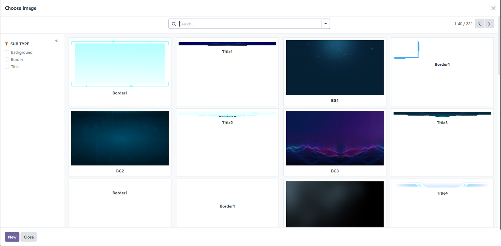
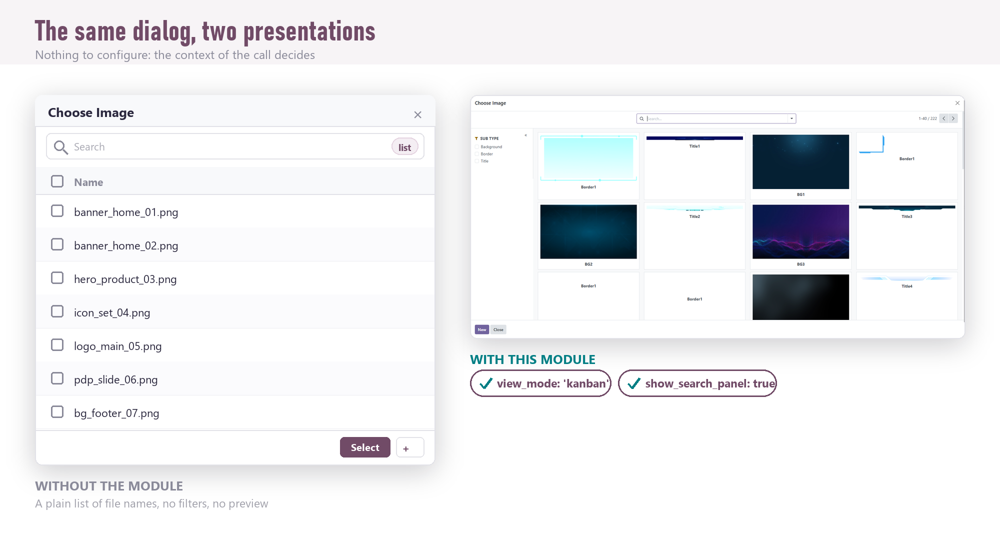
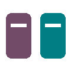
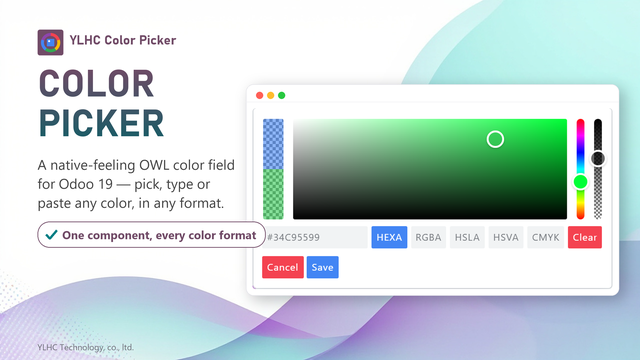

<div class="container">
  <div class="oe_styling_v8">

    <!-- ============ Title + core function illustration ============ -->
    <h2 style="color: #714B67; font-size: 28px; margin: 0 0 6px; border: none; padding: 0;">Kanban Select Create Dialog</h2>
    <p style="font-size: 16px; color: #555; margin: 0 0 18px; line-height: 1.6;">Turn Odoo's &ldquo;select a record&rdquo; dialog into an image-rich kanban with a search panel &mdash; one context flag per call, nothing else changes.</p>
    <div style="margin: 0 0 28px;">
        
    </div>

    <!-- ============ 1. Overview ============ -->
    <h2 style="color: #017E84; border-bottom: 2px solid #017E84; padding-bottom: 6px;">Overview</h2>
    <p style="font-size: 15px; line-height: 1.9; color: #444; margin: 0 0 14px;">
        Odoo's <code style="background:#f4f4f4;padding:1px 5px;border-radius:4px;">SelectCreateDialog</code> &mdash; the
        &ldquo;search more&rdquo; box behind every many2one and many2many <em>Add</em> button &mdash; is hard-wired to a
        plain <strong>list</strong> on a desktop screen, and it always hides the search panel. That is perfectly fine for
        codes and names, but poor whenever records are recognised by a picture: images, attachments, products, templates,
        documents. With hundreds of rows there is also no way to narrow them down by a filter or a grouping.
    </p>
    <p style="font-size: 15px; line-height: 1.9; color: #444; margin: 0 0 14px;">
        This module adds <strong>two opt-in context switches</strong> to that same dialog. Pass
        <code style="background:#f4f4f4;padding:1px 5px;border-radius:4px;">view_mode: 'kanban'</code> to render the
        records as cards, and
        <code style="background:#f4f4f4;padding:1px 5px;border-radius:4px;">show_search_panel: True</code> to reveal the
        filters / favourites / group-by sidebar &mdash; together or separately. Every other dialog in the database keeps
        behaving exactly like the native one, because the flags are read per call.
    </p>
    <p style="font-size: 15px; line-height: 1.9; color: #444; margin: 0 0 24px;">
        It is a single front-end <code style="background:#f4f4f4;padding:1px 5px;border-radius:4px;">patch()</code>: no
        model, no view, no data, no Python. The screenshot above is the running dialog on Odoo 19.
    </p>

    <!-- ============ 2. A closer look ============ -->
    <h2 style="color: #017E84; border-bottom: 2px solid #017E84; padding-bottom: 6px;">The Same Dialog, Two Presentations</h2>
    <p style="font-size: 14px; line-height: 1.9; color: #444; margin: 0 0 12px;">
        Nothing to configure and nothing to migrate: the <code style="background:#f4f4f4;padding:1px 5px;border-radius:4px;">context</code>
        you hand to the dialog at the call site decides how it looks. On the left the stock list; on the right the very same
        model shown as a card grid you can slice with the search panel.
    </p>
    <div style="margin: 0 0 26px; background: #f4f8f8; border-radius: 8px; padding: 10px 10px 4px;">
        
        <p style="font-size: 13px; color: #777; text-align: center; margin-top: 8px;">
            Left: the native list, no filters. Right: the same picker as a kanban with a SUB TYPE filter panel.
        </p>
    </div>

    <!-- ============ 3. Module characteristics ============ -->
    <h2 style="color: #017E84; border-bottom: 2px solid #017E84; padding-bottom: 6px;">Module Characteristics</h2>
    <table style="width: 100%; border-collapse: collapse; margin: 18px 0 26px;">
        <tr>
            <td width="33%" style="vertical-align: top; padding: 10px;">
                <div style="background: #f7f4f6; border-radius: 8px; padding: 18px; height: 100%; box-sizing: border-box;">
                    <h4 style="color: #714B67; margin: 0 0 8px;">Opt-in by Context</h4>
                    <p style="font-size: 13px; color: #555; line-height: 1.7; margin: 0;">Each behaviour is switched on per call, from the dialog's own <code style="background:#fff;padding:1px 5px;border-radius:4px;">context</code>. Enable it only where it helps; every other picker is untouched.</p>
                </div>
            </td>
            <td width="33%" style="vertical-align: top; padding: 10px;">
                <div style="background: #f4f8f8; border-radius: 8px; padding: 18px; height: 100%; box-sizing: border-box;">
                    <h4 style="color: #017E84; margin: 0 0 8px;">Pure Front-end</h4>
                    <p style="font-size: 13px; color: #555; line-height: 1.7; margin: 0;">One OWL <code style="background:#fff;padding:1px 5px;border-radius:4px;">patch()</code> on the standard component. No models, no views, no data, no server code to keep in sync.</p>
                </div>
            </td>
            <td width="33%" style="vertical-align: top; padding: 10px;">
                <div style="background: #f7f4f6; border-radius: 8px; padding: 18px; height: 100%; box-sizing: border-box;">
                    <h4 style="color: #714B67; margin: 0 0 8px;">Selection Logic Unchanged</h4>
                    <p style="font-size: 13px; color: #555; line-height: 1.7; margin: 0;">Single / multi select, the <code style="background:#fff;padding:1px 5px;border-radius:4px;">onSelected</code> callback and the New button all keep working exactly as in the native dialog.</p>
                </div>
            </td>
        </tr>
    </table>

    <!-- ============ 4. Key features ============ -->
    <h2 style="color: #017E84; border-bottom: 2px solid #017E84; padding-bottom: 6px;">Key Features</h2>
    <table style="width: 100%; border-collapse: collapse; margin: 18px 0 6px;">
        <tr>
            <td width="33%" style="vertical-align: top; padding: 10px;">
                <div style="background: #f7f4f6; border: 1px solid #ece7ef; border-radius: 8px; padding: 16px 18px; height: 100%; box-sizing: border-box;">
                    
                    <h4 style="color: #714B67; margin: 6px 0 8px;">Kanban on Desktop</h4>
                    <p style="font-size: 13px; color: #555; line-height: 1.7; margin: 0;"><code style="background:#fff;padding:1px 5px;border-radius:4px;">view_mode: 'kanban'</code> forces the card grid on any screen, so image-bearing records are recognisable at a glance.</p>
                </div>
            </td>
            <td width="33%" style="vertical-align: top; padding: 10px;">
                <div style="background: #f4f8f8; border: 1px solid #d8ecec; border-radius: 8px; padding: 16px 18px; height: 100%; box-sizing: border-box;">
                    
                    <h4 style="color: #017E84; margin: 6px 0 8px;">Search Panel</h4>
                    <p style="font-size: 13px; color: #555; line-height: 1.7; margin: 0;"><code style="background:#fff;padding:1px 5px;border-radius:4px;">show_search_panel: True</code> opens the filters / favourites / group-by sidebar right inside the dialog.</p>
                </div>
            </td>
            <td width="33%" style="vertical-align: top; padding: 10px;">
                <div style="background: #f7f4f6; border: 1px solid #ece7ef; border-radius: 8px; padding: 16px 18px; height: 100%; box-sizing: border-box;">
                    
                    <h4 style="color: #714B67; margin: 6px 0 8px;">Combinable Flags</h4>
                    <p style="font-size: 13px; color: #555; line-height: 1.7; margin: 0;">Use both together for a card grid you can slice by any filter the target model's search view defines.</p>
                </div>
            </td>
        </tr>
        <tr>
            <td width="33%" style="vertical-align: top; padding: 10px;">
                <div style="background: #f4f8f8; border: 1px solid #d8ecec; border-radius: 8px; padding: 16px 18px; height: 100%; box-sizing: border-box;">
                    
                    <h4 style="color: #017E84; margin: 6px 0 8px;">Built for Visual Data</h4>
                    <p style="font-size: 13px; color: #555; line-height: 1.7; margin: 0;">Ideal for the pickers that carry a picture &mdash; images, attachments, products, templates, documents.</p>
                </div>
            </td>
            <td width="33%" style="vertical-align: top; padding: 10px;">
                <div style="background: #f7f4f6; border: 1px solid #ece7ef; border-radius: 8px; padding: 16px 18px; height: 100%; box-sizing: border-box;">
                    
                    <h4 style="color: #714B67; margin: 6px 0 8px;">Zero Core Edits</h4>
                    <p style="font-size: 13px; color: #555; line-height: 1.7; margin: 0;">Implemented with <code style="background:#fff;padding:1px 5px;border-radius:4px;">patch()</code> on the standard component, so it never edits core files and survives Odoo updates.</p>
                </div>
            </td>
            <td width="33%" style="vertical-align: top; padding: 10px;">
                <div style="background: #f4f8f8; border: 1px solid #d8ecec; border-radius: 8px; padding: 16px 18px; height: 100%; box-sizing: border-box;">
                    
                    <h4 style="color: #017E84; margin: 6px 0 8px;">Safe Default</h4>
                    <p style="font-size: 13px; color: #555; line-height: 1.7; margin: 0;">With neither flag present the dialog is byte-for-byte the native Odoo behaviour &mdash; installing it changes nothing on its own.</p>
                </div>
            </td>
        </tr>
    </table>

    <!-- ============ 5. Usage ============ -->
    <h2 style="color: #017E84; border-bottom: 2px solid #017E84; padding-bottom: 6px;">Usage</h2>
    <p style="font-size: 14px; line-height: 1.9; color: #444; margin: 12px 0;">
        Open the dialog as usual and pass the flags in its <code style="background:#f4f4f4;padding:1px 5px;border-radius:4px;">context</code>:
    </p>
    <pre style="background: #1e1e2e; color: #f8f8f2; padding: 16px 18px; border-radius: 8px; overflow-x: auto; font-size: 13px; line-height: 1.6; border-left: 4px solid #017E84;">/** @odoo-module **/
import { SelectCreateDialog } from "@web/views/view_dialogs/select_create_dialog";

this.env.services.dialog.add(SelectCreateDialog, {
    resModel: "your.model",
    multiSelect: true,
    context: {
        view_mode: "kanban",          // cards instead of a list
        show_search_panel: true,      // filters / group-by sidebar
    },
    onSelected: (resIds) =&gt; { /* ... */ },
});</pre>
    <table style="width: 100%; border-collapse: collapse; margin: 18px 0 8px; font-size: 13.5px;">
        <tr style="background: #714B67; color: #fff;">
            <th style="padding: 9px 12px; text-align: left;">Context flag</th>
            <th style="padding: 9px 12px; text-align: left;">Effect on the dialog</th>
        </tr>
        <tr>
            <td style="padding: 8px 12px; border-bottom: 1px solid #ece7ef;"><code style="background:#f4eef3;color:#714B67;padding:2px 6px;border-radius:4px;">view_mode: "kanban"</code></td>
            <td style="padding: 8px 12px; border-bottom: 1px solid #ece7ef;">Loads the model's kanban view; click a card to select it.</td>
        </tr>
        <tr>
            <td style="padding: 8px 12px; border-bottom: 1px solid #ece7ef;"><code style="background:#f4eef3;color:#714B67;padding:2px 6px;border-radius:4px;">show_search_panel: true</code></td>
            <td style="padding: 8px 12px; border-bottom: 1px solid #ece7ef;">Shows the search panel built from the model's search view.</td>
        </tr>
        <tr>
            <td style="padding: 8px 12px;"><code style="background:#f4eef3;color:#714B67;padding:2px 6px;border-radius:4px;">neither</code> (default)</td>
            <td style="padding: 8px 12px;">Identical to the native Odoo dialog.</td>
        </tr>
    </table>
    <p style="font-size: 13px; color: #777; margin: 0 0 26px;">
        The flags are read from the dialog's own context, so you can turn them on for one button and leave every other
        picker on the standard list.
    </p>

    <!-- ============ 6. How it works ============ -->
    <h2 style="color: #017E84; border-bottom: 2px solid #017E84; padding-bottom: 6px;">How It Works</h2>
    <ol style="font-size: 14px; line-height: 1.9; color: #444; margin: 12px 0 26px; padding-left: 22px;">
        <li>The module patches the <code style="background:#f4f4f4;padding:1px 5px;border-radius:4px;">viewProps</code> getter of the standard <code style="background:#f4f4f4;padding:1px 5px;border-radius:4px;">SelectCreateDialog</code>.</li>
        <li>When <code style="background:#f4f4f4;padding:1px 5px;border-radius:4px;">context.view_mode === "kanban"</code>, it switches the embedded <code style="background:#f4f4f4;padding:1px 5px;border-radius:4px;">View</code> type to <code style="background:#f4f4f4;padding:1px 5px;border-radius:4px;">kanban</code> and drops the list-only selectors, so cards become clickable.</li>
        <li>When <code style="background:#f4f4f4;padding:1px 5px;border-radius:4px;">context.show_search_panel</code> is truthy, it flips <code style="background:#f4f4f4;padding:1px 5px;border-radius:4px;">display.searchPanel</code> on.</li>
        <li>Everything else &mdash; the search bar, pagination, the New button, the selection callbacks &mdash; is inherited from core unchanged.</li>
    </ol>

    <!-- ============ 7. Good to know ============ -->
    <h2 style="color: #017E84; border-bottom: 2px solid #017E84; padding-bottom: 6px;">Good to Know</h2>
    <div style="background: #fff3cd; padding: 20px; border-radius: 8px; border-left: 4px solid #ffc107; margin: 12px 0 18px;">
        <p style="margin: 0 0 8px; color: #856404; font-weight: 700;">Requirements on the target model</p>
        <p style="color: #856404; font-size: 14px; line-height: 1.8; margin: 0;">The kanban flag needs a kanban view defined for the model; the search-panel flag needs a search view with filters or group-bys. If a view is missing, Odoo falls back to its normal error / default behaviour.</p>
    </div>
    <div style="background: #f4f8f8; padding: 20px; border-radius: 8px; border-left: 4px solid #017E84; margin: 0 0 18px;">
        <p style="margin: 0 0 8px; color: #017E84; font-weight: 700;">Multi-select in kanban</p>
        <p style="color: #444; font-size: 14px; line-height: 1.8; margin: 0;">A kanban card carries no checkbox, so in card mode a click selects and closes the dialog (a single pick). Keep the default list view when you need to tick several records at once. On a phone the native dialog is already a kanban; this module simply lets you force that look on a desktop too.</p>
    </div>

    <!-- ============ 8. What's included + compatibility ============ -->
    <h2 style="color: #017E84; border-bottom: 2px solid #017E84; padding-bottom: 6px;">What's Included</h2>
    <p style="margin: 12px 0 6px; font-size: 14px; color: #444;"><span style="color:#017E84;font-weight:bold;">&#10003;</span> A single OWL patch of the standard <code style="background:#f4f4f4;padding:1px 5px;border-radius:4px;">SelectCreateDialog</code> (kanban mode + search panel)</p>
    <p style="margin: 0 0 6px; font-size: 14px; color: #444;"><span style="color:#017E84;font-weight:bold;">&#10003;</span> Two documented, per-call context flags that combine freely</p>
    <p style="margin: 0 0 20px; font-size: 14px; color: #444;"><span style="color:#017E84;font-weight:bold;">&#10003;</span> No models, no views, no data files, no Python</p>
    <div style="text-align: center; margin-bottom: 26px;">
        <span style="display: inline-block; background: #eef7f7; color: #017E84; border: 1px solid #cfe9e9; border-radius: 999px; padding: 6px 16px; margin: 4px; font-size: 13px; font-weight: 600;">Odoo 19.0</span>
        <span style="display: inline-block; background: #f7f4f6; color: #714B67; border: 1px solid #e4d3e0; border-radius: 999px; padding: 6px 16px; margin: 4px; font-size: 13px; font-weight: 600;">Community / Enterprise</span>
        <span style="display: inline-block; background: #eef7f7; color: #017E84; border: 1px solid #cfe9e9; border-radius: 999px; padding: 6px 16px; margin: 4px; font-size: 13px; font-weight: 600;">Depends only on web</span>
        <span style="display: inline-block; background: #f7f4f6; color: #714B67; border: 1px solid #e4d3e0; border-radius: 999px; padding: 6px 16px; margin: 4px; font-size: 13px; font-weight: 600;">OWL 2 front-end patch</span>
    </div>

    <!-- ============ 9. Recommended modules ============ -->
    <h2 style="color: #017E84; border-bottom: 2px solid #017E84; padding-bottom: 6px;">Recommended YLHC Modules</h2>
    <p style="font-size: 14px; line-height: 1.9; color: #444; margin: 12px 0 6px;">
        More lightweight front-end patches that polish the standard Odoo 19 interface.
    </p>
    <table style="width: 100%; border-collapse: separate; border-spacing: 14px 14px; margin: 10px 0 26px;">
        <tr>
            <td width="50%" style="vertical-align: top;">
                <div style="border-left: 4px solid #017E84; background: #fbfafb; border-radius: 0 10px 10px 0; overflow: hidden;">
                    <a href="https://apps.odoo.com/apps/modules/19.0/ylhc_mutex_toggle/" target="_blank" style="display: block; text-decoration: none;">
                        
                    </a>
                    <div style="padding: 14px 18px;">
                        <h4 style="margin: 0 0 4px; font-size: 15px; color: #714B67;"><a href="https://apps.odoo.com/apps/modules/19.0/ylhc_mutex_toggle/" target="_blank" style="color: #714B67;">ylhc_mutex_toggle &#8599;</a> <span style="font-weight: 400; color: #8a8a99; font-size: 13px;">&mdash; exclusive toggles</span></h4>
                        <p style="margin: 0; font-size: 13.5px; color: #555; line-height: 1.7;">Another single OWL patch: a boolean column where turning one row on turns the rest off &mdash; ideal for a default / active flag in a list.</p>
                    </div>
                </div>
            </td>
            <td width="50%" style="vertical-align: top;">
                <div style="border-left: 4px solid #017E84; background: #fbfafb; border-radius: 0 10px 10px 0; overflow: hidden;">
                    <a href="https://apps.odoo.com/apps/modules/19.0/ylhc_color_picker/" target="_blank" style="display: block; text-decoration: none;">
                        
                    </a>
                    <div style="padding: 14px 18px;">
                        <h4 style="margin: 0 0 4px; font-size: 15px; color: #714B67;"><a href="https://apps.odoo.com/apps/modules/19.0/ylhc_color_picker/" target="_blank" style="color: #714B67;">ylhc_color_picker &#8599;</a> <span style="font-weight: 400; color: #8a8a99; font-size: 13px;">&mdash; color field widget</span></h4>
                        <p style="margin: 0; font-size: 13.5px; color: #555; line-height: 1.7;">A native-feeling OWL color chooser for any Char field &mdash; pick, type or paste a color in five formats.</p>
                    </div>
                </div>
            </td>
        </tr>
        <tr>
            <td width="50%" style="vertical-align: top;">
                <div style="border-left: 4px solid #017E84; background: #fbfafb; border-radius: 0 10px 10px 0; overflow: hidden;">
                    <a href="https://apps.odoo.com/apps/modules/19.0/ylhc_list/" target="_blank" style="display: block; text-decoration: none;">
                        
                    </a>
                    <div style="padding: 14px 18px;">
                        <h4 style="margin: 0 0 4px; font-size: 15px; color: #714B67;"><a href="https://apps.odoo.com/apps/modules/19.0/ylhc_list/" target="_blank" style="color: #714B67;">ylhc_list &#8599;</a> <span style="font-weight: 400; color: #8a8a99; font-size: 13px;">&mdash; advanced list view</span></h4>
                        <p style="margin: 0; font-size: 13.5px; color: #555; line-height: 1.7;">Fixed header, tree grouping and virtual scrolling &mdash; the list side of the same pick-a-record story.</p>
                    </div>
                </div>
            </td>
            <td width="50%" style="vertical-align: top;">
                <div style="border-left: 4px solid #714B67; background: #fbfafb; border-radius: 0 10px 10px 0; padding: 18px 20px; height: 100%; box-sizing: border-box;">
                    <h4 style="margin: 0 0 6px; font-size: 15px; color: #714B67;">About this module</h4>
                    <p style="margin: 0; font-size: 13.5px; color: #555; line-height: 1.7;">A single <code style="background:#fff;padding:1px 5px;border-radius:4px;">select_create_dialog.js</code> file that patches the standard dialog's <code style="background:#fff;padding:1px 5px;border-radius:4px;">viewProps</code>. Install it, pass a context flag, done.</p>
                </div>
            </td>
        </tr>
    </table>

    <!-- ============ 10. Support ============ -->
    <div style="background: #f9f9f9; padding: 24px; margin-top: 25px; border-radius: 8px;">
        <h3 style="color: #714B67; margin-top: 0;">Support</h3>
        <p style="font-size: 14px; line-height: 1.8; color: #444; margin: 0 0 8px;">
            Questions or a feature you would like added to the dialog? Contact us at
            <a href="https://www.ylhctec.com" target="_blank" style="color: #017E84;">www.ylhctec.com</a>.
        </p>
        <p style="font-size: 13px; color: #777; margin: 0;">&#169; YLHC Technology, co., ltd.</p>
    </div>

  </div>
</div>
